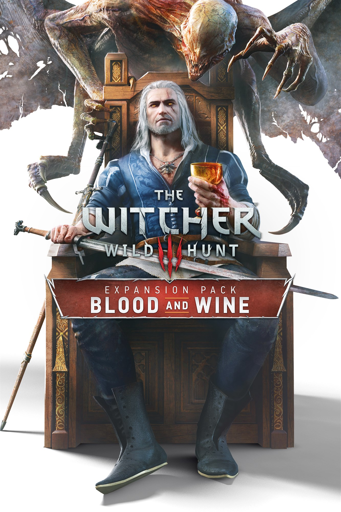

The Witcher 3: Wild Hunt
Información General
The Witcher 3: Wild Hunt es un juego de rol de acción desarrollado por CD Projekt Red. Fue lanzado en 2015 y es la tercera entrega de la serie The Witcher, basada en los libros de Andrzej Sapkowski.
- Género: RPG de acción
- Plataformas: PC, PlayStation 4, Xbox One, Nintendo Switch
- Modos: Un jugador
- Desarrollador: CD Projekt Red
- Editor: CD Projekt
Premios y Reconocimientos
The Witcher 3 ha recibido numerosos premios y ha sido aclamado por la crítica como uno de los mejores juegos de todos los tiempos.
- Juego del Año - The Game Awards 2015
- Mejor Diseño de Juego - Golden Joystick Awards 2015
- Mejor Narrativa - The Game Awards 2015
- Mejor Juego de Rol - The Game Awards 2015
- Premio a la Excelencia en Diseño Visual - BAFTA Games Awards 2016
Expansiones
The Witcher 3 cuenta con dos expansiones principales que amplían la historia y el mundo del juego:
- Hearts of Stone (2015) - Una historia de amor y venganza.
- Blood and Wine (2016) - Una expansión que introduce una nueva región, Toussaint.

Impacto Cultural
The Witcher 3 no solo es un éxito comercial, sino que también ha dejado una huella en la cultura pop:
- Inspiró una serie de Netflix basada en los libros de Sapkowski.
- Es considerado un estándar de oro para los juegos de mundo abierto.
- Ha vendido más de 30 millones de copias en todo el mundo.